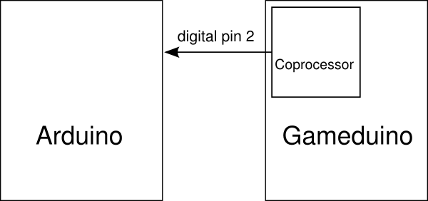

interrupts¶
Instead of using GD::waitvblank() to wait for the end of the frame, it can be more efficient to use interrupts to signal to the Arduino CPU that the frame has ended. The Gameduino can do this using pin 2, an extra pin not involved in the regular SPI traffic.
The scheme shown here is rather more general: it can trigger an interrupt on any specified raster line. The special case of a vertical blanking interrupt is a raster interrupt at line 300.
In this configuration, the Arduino sets pin 2 as an input, and uses attachInterrupt to trigger an interrupt every time pin 2 rises.
The Gameduino is configured to output on pin 2, and gives control of pin 2 to the coprocessor.
On the coprocessor, the rasterinterrupt microprogram generates a high value on pin 2 whenever the raster passes a specified line.
The Arduino sketch uses attachInterrupt to monitor pin 2 and call function service when pin 2 rises. service here just changes the background color, loads the next value for the interrupt line, and returns.
The result is a red bar between lines 150 and 170.
Last modified $Date: 2011-05-13 11:32:42 -0700 (Fri, 13 May 2011) $